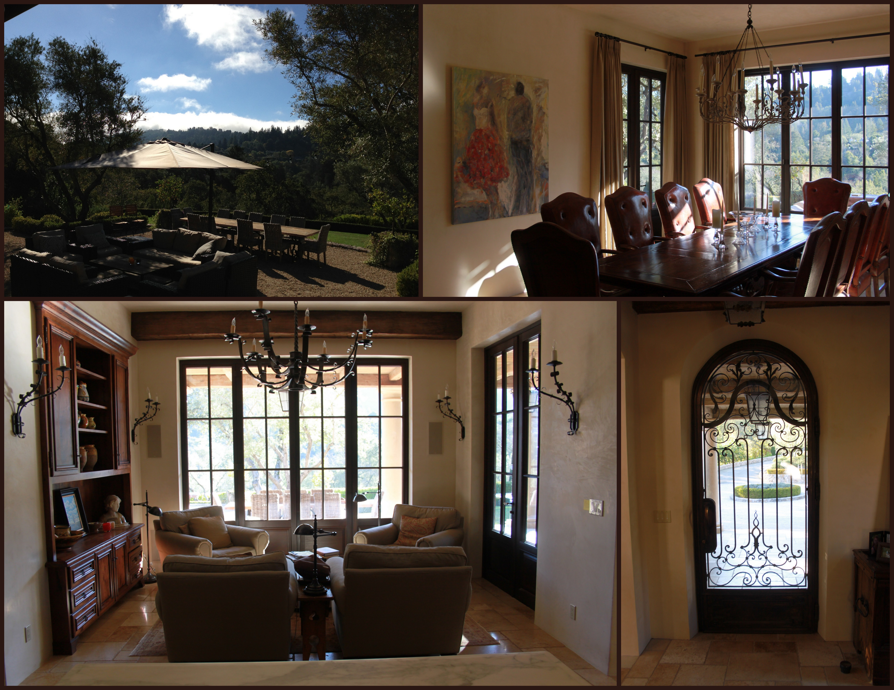
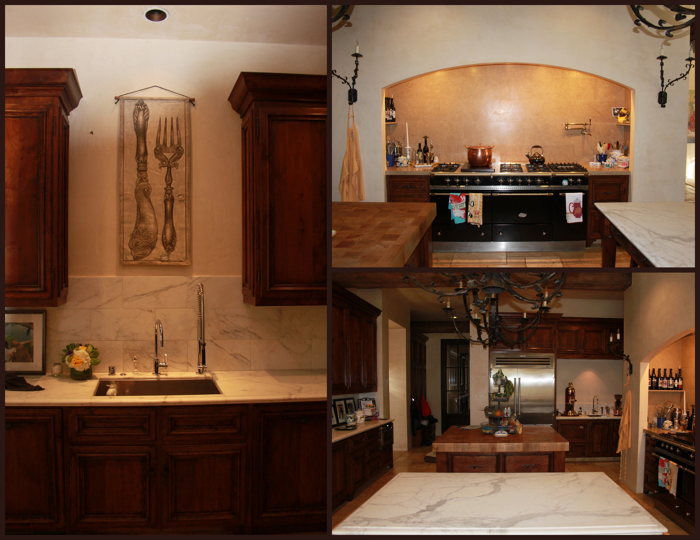
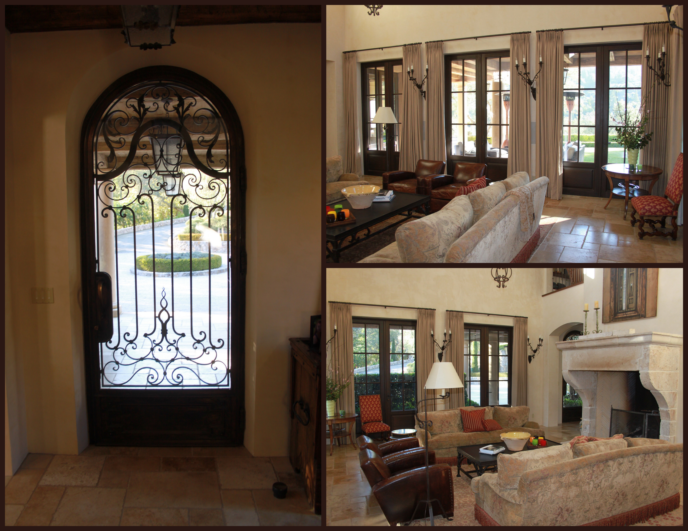
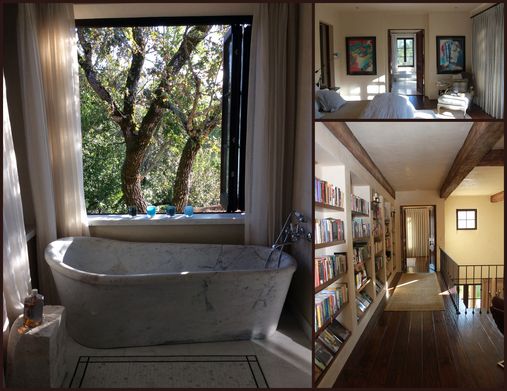
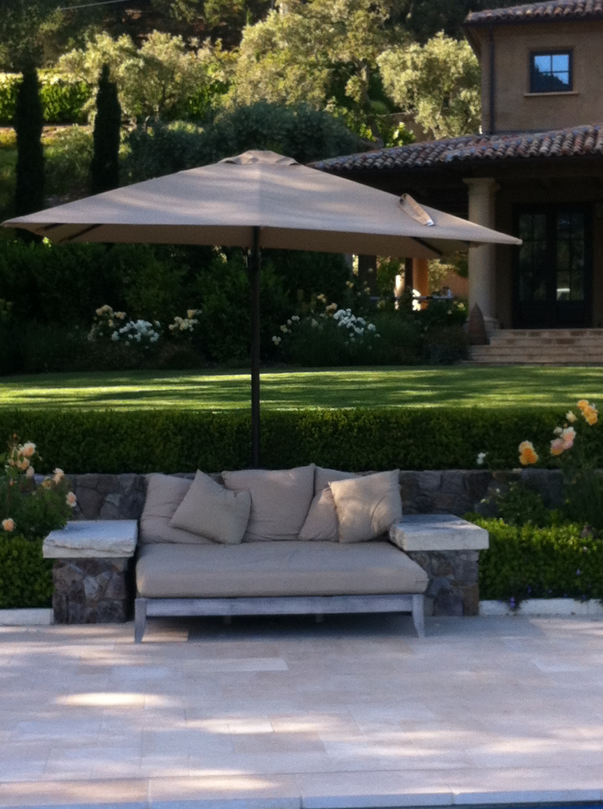
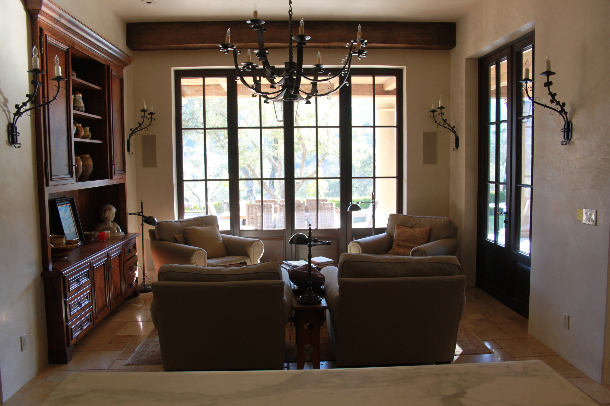
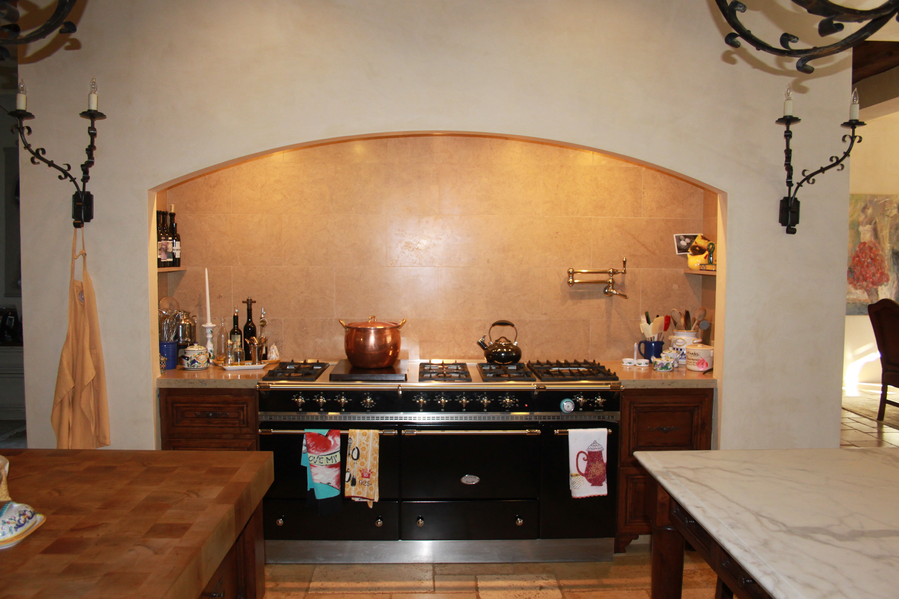

kentfield villa - architecture. project management . permaculture design . landscape planning . construction management
mount tamalpais home
“classic language, contemporary expression”
As was famously stated by Roman Architect Vitruvius in his treatise on architecture, De architectura, later translated famously by Sir Henry Wotton; "Building hath three conditions; firmness, commodity and delight"
This home is a manifestation of just such joy and fulfillment of building. During the conception, design and construction of this exceptional home in Marin County California, our clients reveled in every puzzel, every progression, each opportunity to refine and celebrate the possibilities and the process. The owners project managed and resourced materials from all over the world integrating their vision into a clean understated expression of grace and beauty. No detail was overlooked or dimminished.
Clean lines, classical form, ancient materials, stunning gardens, tree tops, mountain ridges and blue sky are the palate this stunning home is wrought from.
In order to maximise the expanse of the site's spacious central knoll and stunning gardens; the entry road, main house, pool house and the pool are all situated off the edges of the knoll. Massive hundreds-of-years-old Live Oak trees and towering Redwoods were carefully protected. The main house was situated within the oak forest so the scale of the building would be invisible to neighbors nearby and across the valley.
The owners are a very outdoor family who love to live as much as possible outside where the edges of the house meet the stunning gardens, and forest, and the mountain beyond. As a result there are no boundaries in this home.
Eight foot high Austrian doors, and entire window walls, slide aside with the touch of a finger to create a seamless expression of interior and exterior spaces becoming one and the same.
Rather than still-life and landscape paintings adorning the interior of exterior walls, the glass exterior doors open to massive Tuscan columns, and beyond, the art of living nature changing seasons fill all the senses.
The expanse of the interior stone floors extend straight out to the edges of the Loggias.
Beautiful weatherised interior lighting fixtures continue the interior lighting effects to the exterior loggias.
The hundreds of years old hand-hewn beams of the Loggia ceiling, extend the sense of the interior ceilings to the exterior.
Open, light filled, love filled...........the results are self explanitory......for this family, this home is the ultimate expression of home and the good life.






